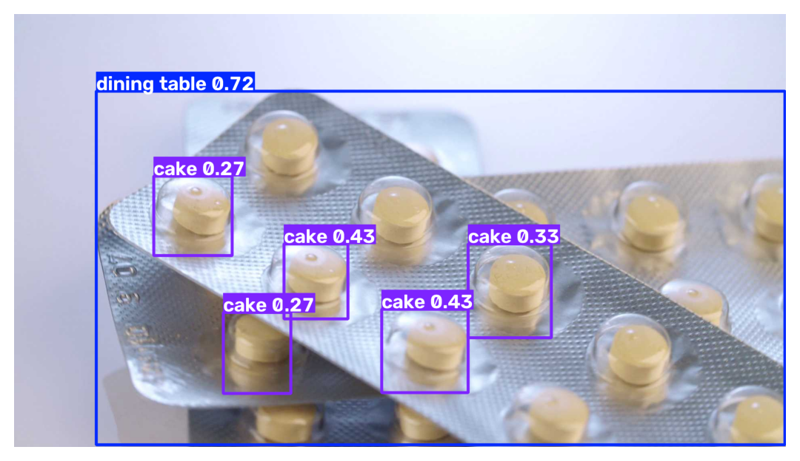
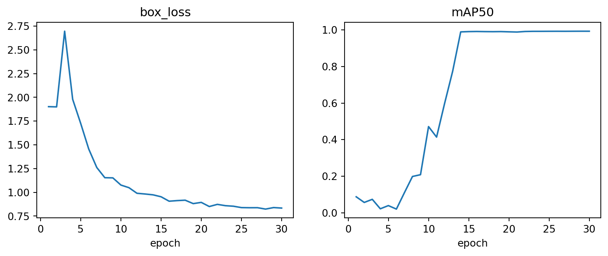
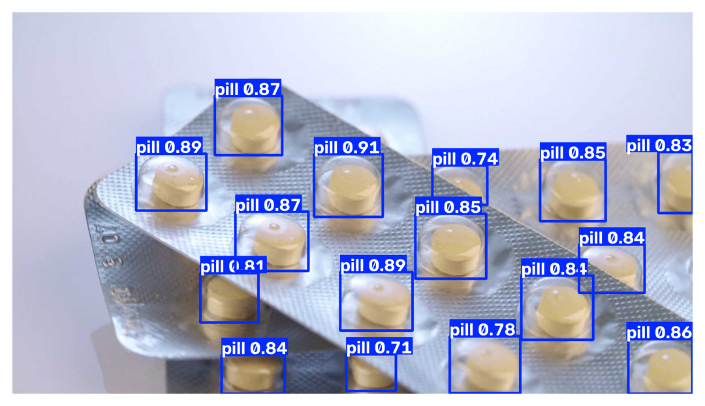

# ▶ 준비 셀 — 그대로 실행하세요.
import torch
print(torch.cuda.is_available())True
⏱ 60분 · 9주차 실습
실습 9에서 사용한 YOLO는 COCO의 80개 클래스만 찾도록 학습된 모델입니다.
80개 클래스에 없는 물체를 찾게 하려면 어떻게 해야 할까요?
알약 사진 115장으로 사전학습된 YOLO를 다시 학습시켜, 알약을 찾는 탐지 모델을 만듭니다.
대응 이론: Ch09 객체탐지
Colab 설정: 메뉴 런타임 → 런타임 유형 변경 → T4 GPU를 고른 뒤 시작합니다. 학습에 GPU가 필요합니다.
| 표시 | 뜻 |
|---|---|
| ▶ | 그대로 실행합니다 |
| ✍️ | 보여 준 코드를 손으로 타이핑해서 실행합니다. 빈칸 ___은 채웁니다 |
| 📝 | 과제. 힌트를 보고 스스로 풉니다 |
# ▶ 준비 셀 — 그대로 실행하세요.
import torch
print(torch.cuda.is_available())TrueColab에서 GPU 런타임이면 True가 나옵니다. 다른 라이브러리는 필요한 셀에서 그때그때 불러옵니다.
이번 실습에서는 알약 포장 사진을 씁니다. 사진마다 알약 하나하나에 박스를 그린 레이블이 함께 들어 있습니다.
# ▶ 그대로 실행하세요 — 알약 사진과 레이블 내려받기
import urllib.request # 인터넷에서 파일을 내려받는 표준 라이브러리
import zipfile # 압축 파일을 푸는 표준 라이브러리
url = 'https://github.com/ralbu85/lecture_deeplearning_labs/releases/download/data-v1/medical-pills.zip'
urllib.request.urlretrieve(url, 'medical-pills.zip')
zipfile.ZipFile('medical-pills.zip').extractall('.')COCO로 사전학습된 YOLO에 알약 사진 한 장을 넣어 봅니다.
# ✍️ 직접 입력
from ultralytics import YOLO # YOLO 모델을 내려받고 쓰는 라이브러리
import matplotlib.pyplot as plt # 그림을 그리는 라이브러리
img = 'medical-pills/images/val/Frame_64.jpg' # 검증용 알약 사진 한 장
coco_model = YOLO('yolo11n.pt') # COCO로 사전학습된 가장 작은 YOLO
r = coco_model(img, verbose=False)[0]
plt.imshow(r.plot()[:, :, ::-1]) # r.plot()은 BGR 순서이므로 RGB로 뒤집어 그린다
plt.axis('off')
plt.show()
알약에는 박스가 그려지지 않고, 알약을 케이크(cake)로, 사진 전체를 식탁(dining table)으로 봅니다. 알약은 COCO의 80개 클래스에 없으므로 모델은 알약이라는 답을 낼 수 없고, 80개 가운데 가장 비슷한 클래스를 고릅니다. 그러므로 알약을 찾게 하려면 알약 사진과 레이블로 모델을 다시 학습시켜야 합니다.
내려받은 medical-pills 폴더는 실습 9에서 본 YOLO 학습 데이터의 형태를 따릅니다. 사진은 images에, 레이블은 labels에 들어 있고, 각각 학습용 train과 검증용 val로 나뉩니다.
# ✍️ 직접 입력
import os # 폴더와 파일을 다루는 표준 라이브러리
len(os.listdir('medical-pills/images/train')), len(os.listdir('medical-pills/images/val')) # 학습용, 검증용 사진 수(92, 23)학습용 사진이 92장, 검증용 사진이 23장입니다. 1절의 사진에 알약이 몇 개 있는지 레이블 파일의 줄 수로 확인합니다. 레이블은 한 줄이 물체 하나입니다.
# ✍️ 직접 입력
len(open('medical-pills/labels/val/Frame_64.txt').readlines()) # 레이블 파일의 줄 수 = 알약 수16이 사진에는 알약이 16개 있습니다.
YOLO를 학습시키려면 데이터가 어느 폴더에 있고 클래스 번호마다 이름이 무엇인지 적은 설정 파일이 필요합니다. 이 파일은 YAML 형식으로 씁니다. path에는 데이터 폴더의 전체 경로를, train과 val에는 그 안의 학습용·검증용 사진 폴더를, names에는 클래스 번호와 이름을 적습니다. 알약 데이터는 클래스가 pill 하나이고 번호는 0입니다.
아래 코드는 설정 파일 pills.yaml을 만드는 코드입니다.
# ✍️ 직접 입력
root = os.path.abspath('medical-pills') # 데이터 폴더의 전체 경로
yaml_text = f"""path: {root}
train: images/train
val: images/val
names:
0: pill
"""
with open('pills.yaml', 'w') as f: # 위 내용을 pills.yaml 파일로 저장한다
f.write(yaml_text)미세 조정은 사전학습된 모델의 가중치에서 출발하여 내 데이터로 모델을 다시 학습시키는 것입니다. 처음부터 학습시키면 사진이 수만 장 필요하지만, COCO로 사전학습된 모델은 이미 물체의 모양과 경계를 찾는 법을 배워 두었으므로 사진 92장으로도 알약을 찾도록 학습시킬 수 있습니다.
아래 코드는 COCO로 사전학습된 YOLO를 불러와, 3절의 설정 파일에 적힌 알약 데이터로 30에폭 학습시키는 코드입니다. imgsz=640은 사진을 가로세로 640픽셀로 맞춰 학습한다는 뜻입니다. T4 GPU에서 몇 분 걸립니다.
# ✍️ 직접 입력
model = YOLO('yolo11n.pt') # COCO로 사전학습된 가중치에서 출발한다
results = model.train(data='pills.yaml', epochs=30, imgsz=640) # 알약 데이터로 30에폭 학습한다학습하는 동안 에폭마다 두 줄이 출력됩니다. 첫 줄의 box_loss는 예측 박스가 정답 박스와 어긋난 정도인 박스 손실이고, cls_loss는 클래스를 틀린 정도인 클래스 손실입니다. 둘째 줄의 mAP50은 검증 사진에서 예측 박스와 정답 박스의 IoU가 0.5 이상이고 클래스가 같으면 맞은 예측으로 보고 계산한 정확도로, 1에 가까울수록 잘 찾는다는 뜻입니다.
에폭마다 기록된 값은 학습 결과 폴더의 results.csv에 저장됩니다. 아래 코드는 이 파일을 읽어 박스 손실과 mAP50의 변화를 그리는 코드입니다.
# ▶ 그대로 실행하세요 — 학습 곡선
import pandas as pd # 표 형태의 데이터를 다루는 라이브러리
log = pd.read_csv(model.trainer.save_dir / 'results.csv') # 에폭마다 기록된 손실과 정확도
fig, ax = plt.subplots(1, 2, figsize=(10, 3.5))
ax[0].plot(log['epoch'], log['train/box_loss'])
ax[0].set_title('box_loss')
ax[0].set_xlabel('epoch')
ax[1].plot(log['epoch'], log['metrics/mAP50(B)'])
ax[1].set_title('mAP50')
ax[1].set_xlabel('epoch')
plt.show()
박스 손실은 에폭이 지날수록 줄어들고, mAP50은 학습 후반에 0.99에 가까워집니다.
학습이 끝나면 model에는 검증 정확도가 가장 높았던 에폭의 가중치가 들어 있습니다. 1절과 같은 사진을 넣어 봅니다.
# ✍️ 직접 입력
r = model(img, verbose=False)[0]
plt.imshow(r.plot()[:, :, ::-1])
plt.axis('off')
plt.show()
알약마다 pill 박스가 그려집니다. 찾은 박스 수를 레이블의 알약 수와 비교합니다.
# ✍️ 직접 입력
len(r.boxes) # 모델이 찾은 알약 수16레이블의 16개와 같거나 거의 같은 수가 나옵니다. 1절에서 알약을 하나도 찾지 못한 모델이 사진 92장으로 미세 조정한 뒤에는 알약을 하나하나 찾습니다.
학습한 가중치는 학습 결과 폴더의 weights/best.pt에 저장됩니다. 이 파일을 YOLO('...best.pt')로 불러오면 다시 학습하지 않고 알약 탐지 모델을 쓸 수 있습니다.
# ✍️ 직접 입력
model.trainer.best # 학습한 가중치 파일의 경로PosixPath('/workspace/BALAB_Prof/Lecture_DeepLearning/labs/runs/detect/train/weights/best.pt')검증용 사진 Frame_420.jpg의 알약을 미세 조정한 모델로 찾고, 찾은 수를 레이블의 알약 수와 비교합니다.
# 📝
#> 힌트: 5절처럼 사진을 model에 넣고 len(r.boxes)로 찾은 수를 셉니다.
#> 힌트: 레이블의 알약 수는 2절처럼 레이블 파일의 줄 수로 셉니다.
r2 = model('medical-pills/images/val/Frame_420.jpg', verbose=False)[0]
print(len(r2.boxes), len(open('medical-pills/labels/val/Frame_420.txt').readlines()))18 18✏️ 찾은 수 / 레이블의 알약 수:
예시 답: 레이블의 알약은 18개이고, 모델도 18개 안팎을 찾습니다.
10원, 50원, 100원, 500원 동전을 찾는 모델을 만든다고 합시다. 사진과 레이블은 coins 폴더에 알약 데이터와 같은 형태로 들어 있습니다. 3절처럼 이 데이터의 설정 파일 내용을 씁니다.
# 📝
#> 힌트: 3절의 yaml_text에서 path의 폴더 이름과 names만 바꿉니다. 클래스 번호는 0부터 차례로 붙입니다.
yaml_text = f"""path: {os.path.abspath('coins')}
train: images/train
val: images/val
names:
0: 10won
1: 50won
2: 100won
3: 500won
"""
print(yaml_text)path: /workspace/BALAB_Prof/Lecture_DeepLearning/labs/coins
train: images/train
val: images/val
names:
0: 10won
1: 50won
2: 100won
3: 500won
✏️ 설정 파일 내용:
예시 답:
names에 클래스 네 개를 0~3번으로 적습니다. 레이블 파일의 클래스 번호는 이 순서를 따라야 하므로, 어노테이션 도구에 클래스를 입력할 때도 같은 순서로 입력합니다.
| 배운 것 | 핵심 |
|---|---|
| 사전학습 모델의 한계 | COCO 80개 클래스에 없는 알약은 찾지 못하고 가장 비슷한 클래스(cake)로 봄 |
| 학습 데이터 | images·labels 폴더, 각각 train·val. 레이블 한 줄이 물체 하나 |
| 설정 파일 | path(데이터 폴더), train·val(사진 폴더), names(클래스 번호와 이름) |
| 미세 조정 | YOLO('yolo11n.pt')에서 출발해 model.train(data='pills.yaml', epochs=30, imgsz=640) |
| 학습 기록 | box_loss(박스 손실), cls_loss(클래스 손실), mAP50(IoU 0.5 기준 정확도) |
| 결과 | 사진 92장으로 미세 조정한 모델이 알약을 하나하나 찾음. 가중치는 weights/best.pt |
다음: 실습 10에서는 이미지에서 텍스트로 넘어갑니다.